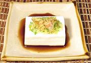

|
Yakko / HiyayakkoJapan - Yakko / Hiyayakko | ||||
| Serves: Effort: Sched: DoAhead: |
4 app * 10 min Part |
A chilled block of tofu - about as simple as you can get, and the most popular tofu dish in Japan. Hiya means cold and Yakko refers to the white square emblem worn by the Yakko - servents to the Samurai in Edo period Japan. | |||
|
1 a/r a/r a/r a/r ---- |
--- |
Tofu block (1) Scallion Ginger Root Bonito Flakes (2) Soy Sauce, light -- Other toppings Karashi mustard (3) Perilla Leaf (4) Yuzu zest (5) Myoga Ginger (6) Okra slices Plum paste |
Make: - (10 min)
|